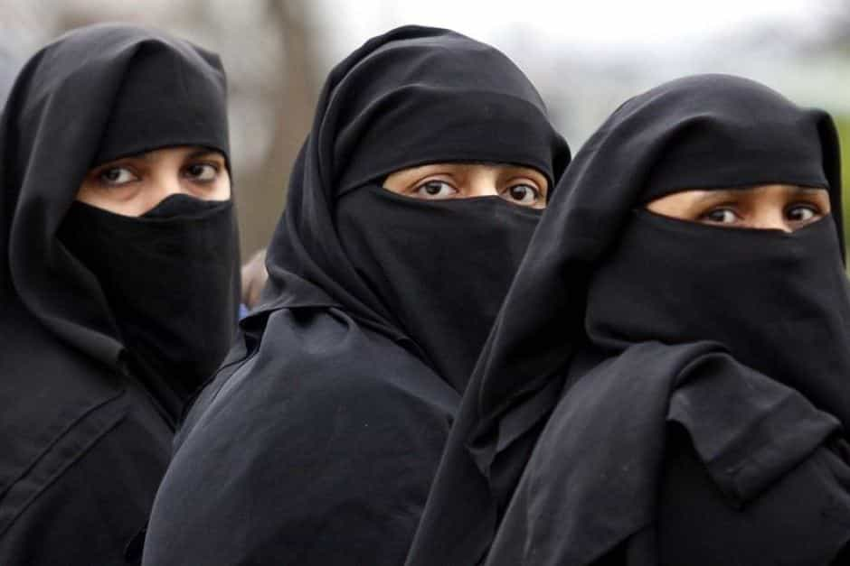
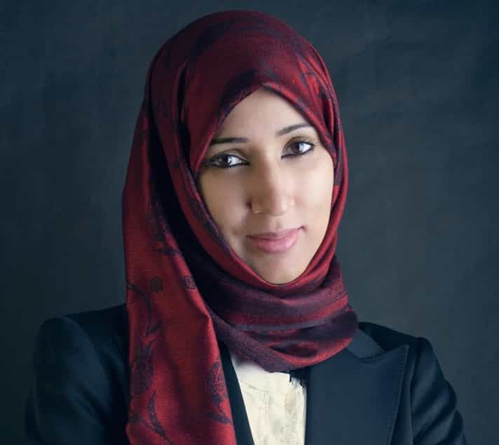

Hesse Kassel is an Australian economist. He stopped chasing money and chased women and made children instead. He blogs right here


Muslims account for over twenty percent of the population of the world and more than that fraction of prime-aged girls. For religious and cultural reasons these girls tend to be quite inaccessible to outsiders and often have their romantic and sexual choices restricted or simply made on their behalf.
A high proportion of Muslim girls, families, and communities take religious and cultural practices and rules seriously. These practices include an outright ban on romantic and sexual contact with non-Muslim men. That makes them a difficult, but not impossible challenge for an outsider. The journey to success with a Muslim girl is often challenging but can be a rewarding one.
This article attempts to offer some guidance on what a man should expect on this journey.
All points are generalizations only, based on the personal experiences of the author, who is not a Muslim. As with any other religious group there is a high level of variation between individuals within that group. These points should only be seen as tendencies to look out for and warnings of what to be prepared for, not as certainties.
Associating with non-Muslim men or being seen to encourage the prospect is a much riskier proposition for a Muslim girl. Consequently, Muslim girls will give more subdued signals and will wait for greater certainty before clearly demonstrating interest. If a girl with a headscarf shows the slightest sign of interest then she is very interested. If she allows herself to be isolated or consents to any kind of public display then sex is a virtual certainty. Remember that to her what others see and think is everything so privacy, secrecy and subtlety are gold.
Sex roles are distinct both in the sense of being clearly different and being defined in a distinctive way. For example, if she has a vehicle and the man doesn’t she will often expect him to drive, even on a first meeting or date. Another common theme is to get a direct question such as “If I wanted to leave would you let me?” This question is a strange kind of shit test. It’s not an answer that comes naturally for a western guy, but the expected response is something like “No, you can’t leave.”
A Muslim girl will be extremely loyal as long as she believes the road to a permanent relationship is open. Showing strength and alpha characteristics is still vital, but at least a nod to beta provider game is indispensable in this demographic.

There is no easy way around this one. Expect deadly serious physical threats from her and from those close to her if they know or suspect the situation. In my experience these threats are always just hot air. On the other hand, everyone has heard about situations where they turned out to be all too serious. Threats by themselves do not indicate any personal ill will. Just think of them as negotiating tactics.
As with all threats it is critical to maintain a steady, untroubled manner. Make a clear decision to dismiss the threat, back down fully or leave then own that choice fully. Visible fear or vacillation is like waving a red rag at a bull. Choose as safe a medium and environment for such conversations as possible. Acknowledging understanding and requesting time to think, decide or learn can be a useful tactic for escaping a situation that seems imminently dicey.
Muslim girls will feel shame at the thought of others knowing about her forbidden love, but not personal guilt. Consequently her focus will not be on reluctance to do but on reluctance to be seen to do. She will probably attempt to hide any contacts from her family and peers. If she is not a virgin she will likely claim to have only one previous partner who raped or coerced her.
She will be obsessed with evading awkward questions about relationship status from others and avoid situations in which they might come up. Interactions are sometimes carefully managed to imply her boyfriend is her husband without telling a direct lie.
A Muslim girl will usually have marriage in mind as an endgame from an early stage. The rules of the religion do not allow any marriage unless the man agrees to convert to Islam. Therefore she will also have that in mind from an early stage.
Her family will hope to resolve the situation in one of two ways—by either getting rid of the man or forcing marriage with conversion. This is one of the topics which can be expected to trigger physical threats. Those threats will become more direct, immediate, and forceful as the perceived level of seriousness of the relationship increases.
Conversion means agreeing to a set of odious religious rules covering every aspect of life down to the smallest detail. Obviously it is not something that can be sincerely agreed to or insincerely agreed to while remaining a man of strength, character, and value.
Islamic religious rules mandate that a girl give her husband sex at any time or in any manner he chooses. Muslim girls typically live up to this one in any sexual relationship.
For girls circumcision is common in some areas but covers a wide range of practices, from minor to absolutely brutal. The minor kind will not change the practice of sex much, but does seem to make losing virginity a more painful and bloody experience. I have no firsthand experience of the more severe practices. Circumcision is mandatory for men in Islam. Girls will not have a problem with a man who is not.

Expect as much pressure to comply with religious rules for living as she feels she can get away with. This pressure will take the form of outright appeals to religion, but also of seemingly unrelated lobbying and rationalizations. My strategy is to evade these conflicts until the relationship becomes sexual, then cheerfully violate every rule as much as possible.
Even the least religious Muslim girls will shun pork and probably alcohol. Any influence she might have will be used to avoid them and not just for her. For eating out she will go to great lengths to choose the most compliant eating establishment. That means having the most Arabic script, space for prayers etc., failing that serving only halal food, failing that not serving pork.
In theory every Muslim prays five times a day. Compliance will probably be patchy though. The process involves washing in a mandated style, then putting on a prayer costume, then doing the prayer itself on a prayer mat. Annoyingly the first prayer is at five in the morning. By default no consideration, such as going into another room, will be shown so expect to be woken up.
During the month of Ramadan many girls will fast during daylight hours. Muslims will usually try to claim that others can’t eat because it is somehow rude and unfair on those who are fasting. This month features more compliance with prayer schedules and her cooking breakfast before dawn too. In theory it also means no sex during daylight hours, but in practice girls will if it comes up.

In Western communities contraception and to a lesser extent abortion are routine parts of life. Not so in this case. Do not expect her to be using contraceptives or to push for their use. In the event of pregnancy she is unlikely to want an abortion and her family will definitely not agree to an abortion.
If Western women are not satisfying your needs or meeting your standards, it may be worth giving a Muslim woman a chance. Muslim women often are able to provide what Western women lack.
Read More: 8 Essential Rules For Banging A Single Mom